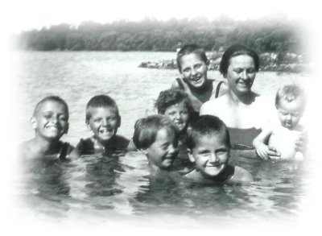

George Newbury ( 1859.06.27 - 1904.10.21 ) m. Caroline Bester

George was born in Sundon, Bedfordshire, England. His first wife had passed away in 1886 leaving him with three boys. He married his second wife Caroline Bester in Edmonton, Middlesex, England in November 1887 when he was 28 years old. His granddaughter Shirley Newbury remembers hearing that two men came to visit her parents not long after they were married (1921) and that these were two of the brothers from the first marriage. She recalls it being mentioned that they were redheads and that they had moved to Canada or more likely the US. Shirley also remembers that George was apparently 'disowned' by his father because they didn't approve of Caroline ... "She was a show girl".
Their first child was Elizabeth who was born in 1888. They went on to
have Millicent (1891), William (1892), Annie (1895) and Thomas (1900).
George worked as a caretaker at the Tottenham Cemetery. The family lived in a home at the cemetery. There is some variation on what he died from: either a disease from handling dead bodies or gangrene from a cut on his finger. Must get death cert. to see what it has to say
Here is a picture of George and Caroline and two of their children, Annie and Thomas. small version, large version (130k).
Here is another picture, this time its of the 5 children. Back row:
Annie and Milly, Front row: Bill, Tommy and Lizzie. This was taken in
England, possibly at the time of George's funeral. larger version (101k)
Caroline Bester ( 1865.10.08 - 1936.06.02 ) m. George Newbury
After her first husband, George Newbury died in England in 1904, Caroline came to Canada in 1908 as a 42 year old widow. She moved to Orillia, Ontario, Canada with her 3 youngest children, William, Annie and Thomas. Then Millicent followed in about a year and Elizabeth, the oldest, who was already married arrived in 1910 with her husband and five year old
daughter. It looks like Caroline was following her sister Anne who was in Canada by 1907. It looks like Lydia made it over in 1910 and possibly Elizabeth along with many other cousins.
In Orillia, Caroline met and on 1919.11.11 she married a man named John Henry Coleman Armstrong. Rumour has it that he built her a one room home on the land that they referred to as Moffet's Farm on/near Crawford Street. He was buried in St. Andrew's St. James' Cemetery in Orillia on April 5, 1930. The Cemetery's records show that he was 69 years old.
Here are three photos of Caroline or "Grandmother Armstrong". I don't know where the one with the porch was taken but the other two are on Moffett's Farm. The man in the middle photo is Garnet Knight. larger version (342 k)
Caroline is also buried at St. Andrew's St. James' Cemetery. The
cemetery records show that the burial date was June 5, 1935 and she was
72 years old. More about her father. mother and siblings.
Thomas Henry George Newbury (5 Oct. 1900 - Aug. 1948) m. (22 Sep. 1921) Alice Edith May Latham (22 Sep 1900 - 17 Mar 1991)
1900
Tommy was born in England at the end of Queen Victoria' reign
(1837-1901) into a family of three older sisters and one older brother.
His oldest sibling, Lizzie, would already have been twelve years old.
His closest sibling, Annie would have been five.
1904 - 1906
His father died in 1904 when Tommy was 4 years old. In 1908 Tom moved to Orillia, Ontario, Canada with his mother and brother William and sister Annie in 1908. There were already several aunts and cousins in Orillia. His sister Millie followed about a year later and Lizzie arrived in 1910 with her husband and five year old daughter Connie. Before he enlisted, he worked in a tack factory.
1915 - 1918 WWI
Tom and his brother Bill went to England for WWI. Tom didn't go to
the front though, he was too young and there apparently were other,
less dangerous jobs. Rumour has it that they visited some Newburys while they were
overseas. Here is a picture of Bill in France in 1916, he's the one in
the middle: small version, large version (273 k).
1918 - 1933
Tom and Bill also worked on the steamships - freighters, possibly
shoveling coal. Here is a picture on a ship. Tom is on the left and
Bill is on the right, I don't know who is in the middle: larger version (201 k).
While in Toronto he learned to be a linotype operator. His brother Bill had married
Tish Walker in 1919, she worked at Woolworth's in Toronto with Alice Latham.
Because of this connection Tom met Alice. He used to sing "I found a million dollar baby in the five and dime".
Thomas and Alice were married in Toronto on September 22, 1921 - that
was Alice's 21st birthday. She was about 2 weeks older than Tom and
there was a fair bit of teasing about him being "just a kid". Before
they left Toronto they had seven children, George (1922), Raymond
(1923), William (1925), Thomas (1927), Shirley (1928), Elizabeth (1930)
and Connie (1933). His sister Annie's four children were baptized on
the same day, at the same church as the wedding - quite a commotion!
Here's a picture of Tom and five of the kids (George, Raymond, Bill, Tommy and Shirley) in Toronto: a different shot.

1933 - 1935 Kingston, Green Bay Point in Barriefield
When the youngest, Connie, was about 3 months they moved to
Kingston, Ontario in a truck (1933). Shirley remembers that all the
Bridal Rose dinner plates were broken when they arrived. Some of this
set was auctioned off when the farm on 33 Hwy was sold (1993-4). Tom
had come ahead first and gotten a job as a linotype operator at Hansen
and Edgar's. He lived in a house on University Ave. where a Mrs. Bruton
looked after the house for the man who owned it. When the rest of the
family arrived they rented a house around the corner on Earl St. - it
may have been called the "Stone Jug". When they moved in it was so cold
that the pipes had frozen. The boys were always into things - like the
coal yards and the lake, Raymond almost drowned one day. Shirley
attended Victoria Public School for a few months. The kids all managed
to come down with the measles.
After six months Tom decided it would be better to move to the
'country', which at that time meant "The Point" at Barriefield. Tom
walked to work from there, Hansen and Edgar's was located where the
Queen's Hotel is now - Brock near Bagot. Their nearest neighbours were
Dollar Bill and Johnny Stewart. Dollar Bill lived in a steel hanger
suitable for water planes, Shirley doesn't remember ever seeing a plane
there though. Well known for his bootlegging, he also had a store in
there with candy for the kids. He biked into Kingston with a box tied
onto his bike and returned with papers to burn in his round wood stove.
Shirley remember one winter when she came upon the hole in the ice that
Dollar Bill had made to get his water. It had started to freeze
over again and rather than poke it with a stick or toss a rock at it
she decided to just jump right on it with both feet. She of course
broke right through and was completely soaked but because they'd always
been told "Not to call us it you get yourself in trouble" she managed
to pull herself out and get home and dried off without anyone noticing.

They also had an icehouse at The Point. The Newbury boys with
some help from the Norman boys cut ice in the winter and packed it in
sawdust. It lasted right through to summer. There was an emergency one
day when some woman in Barriefield had a stroke or something and some
people came to get ice to make her more comfortable. One day
Shirley was fishing into the open water that was created from cutting
the ice. She managed to slide right into the river! There she was
splashing around until someone pulled her out.
Here are three pictures of students of Barriefield Public School.
Alice raised chickens and geese to sell.
Their milkman was Joe Galivan and Raymond started working on their
dairy farm. They paid him 2 calves. He gave them back the male calf for
wintering the female for him. He brought her home in the spring. They
kept her tied up on a rope. She was like a pet; she would try to come
inside the house for bread! Connie died at the point from pneumonia,
she was about two years old - in those days there wasn't a whole lot
they could do for you.
1936 - 1939 On to Hwy 15 ...
After three years (1936-7) they moved to the farm on Hwy. 15. Tom
bought three red and white cows from Greenlees. Buddy Bingley (Tom's
nephew) lived with them at some point and attended Barriefield School.
After seven years a new owner of the farm decided to live there.
In 1936 Caroline Bester died. Tom took the train from Kingston to Orillia for the funeral.
1939 - 1944 WWII
Raymond went off to the war when he was 15 1/2 (1939), he came home
with pleurisy when he was 19 (1943). He had to stay at St. Mary's of
the Lake Hospital. Shirley used to ride her bike from 15 Hwy to SML to
visit. Raymond never married but there was a girl named Jean in
England. Things just didn't work out I guess. There was mention that
she wanted to wait till he was 21 before they married, not to mention
the prospect of moving to Canada.
George also joined the Army but he had to claim to be 18
because Raymond had already signed up and said he was 19. When he came
home he had taken some shrapnel in the leg. When he decided to reenlist
they said he was too old and he had some trouble convincing them of his
real age because of the earlier misinformation.
In 1941 Tommy died from Diabetes, he was 16. Annie and Millie came down from Orillia for the funeral.
In 1943 they moved to a house owned by Mrs. Rett Brawley
somewhere around Harrowsmith/Sydenham. It's hard to imagine today, but
the cows had to walk from one farm to the next! This would have been
around 20 miles and the path would have been through Kingston. Shirley
remembers the farmer across the road helping them burn some brush - it
ended up getting out of control and the fence posts burned as well. Mrs
Brawley, who lived in part of the house, probably though this was a
wild bunch. Shirley remembers her and Betty attending Forest Hill
School while they were there.
1945 - 1946 After WWII
After 2-3 years it was on to McEwen's in Railton.
 Here is a photo of Tom and Alice at McEwen's: larger version.
Shirley went to grade 8 at the Railton school. Then she
had a year off before starting to work at the Kingston General
Hospital. Betty joined her about 6 months later. Shirley and Betty
worked at KGH for three years from 1946-48.
Here is a photo of Tom and Alice at McEwen's: larger version.
Shirley went to grade 8 at the Railton school. Then she
had a year off before starting to work at the Kingston General
Hospital. Betty joined her about 6 months later. Shirley and Betty
worked at KGH for three years from 1946-48.
The family moved to a farm on Eel's Lake behind Sydenham. The train
track ran close by and Shirley used to fish off the tracks. They ate
what they caught there.
1947 - 1948 Settling down on Hwy 33
Around 1947 the gratuity the DVA paid Raymond was enough to buy the
land on the Hwy. 33 farm, about 3 miles west of Bath, Ontario. Bill
already had the equipment and the cows. Raymond continued to work on
the lakers and in the lumber camps while Bill worked the farm. Shirley
returned to work on the farm for a while before she moved into town and
found work at Kresge's in 1948. Tom continued to commute to Kingston to
work at Hansen and Edgar's until his death in August 1948. The rest of
this story will have to wait till I get a link up to Alice's tree.
 Here's a picture of Alice with five of her children - back row: Bill, George, Raymond; front row: Shirley, Alice, Betty: larger version.
Here's a picture of Alice with five of her children - back row: Bill, George, Raymond; front row: Shirley, Alice, Betty: larger version.
 Newbury family markers at the Cataraqui Cemetery near Kingston, Ontario.
Newbury family markers at the Cataraqui Cemetery near Kingston, Ontario.
{kind=link}
{kind=link}
{kind=link}
{kind=link}
{kind=link}
{kind=link}
{kind=link}
{kind=link}
{kind=link}
{kind=link}